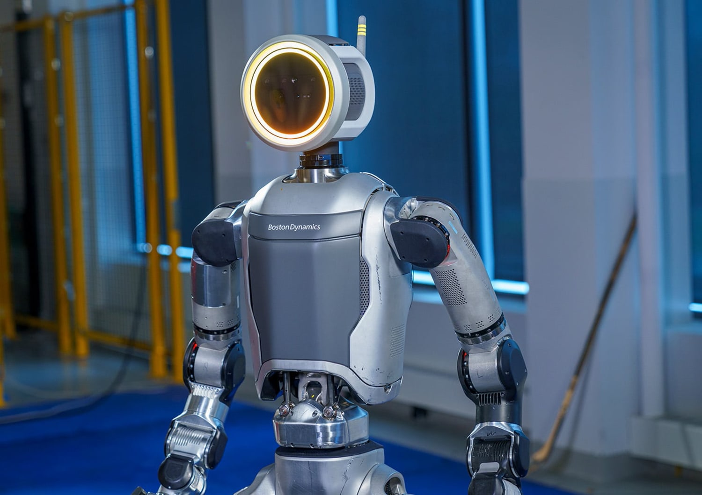
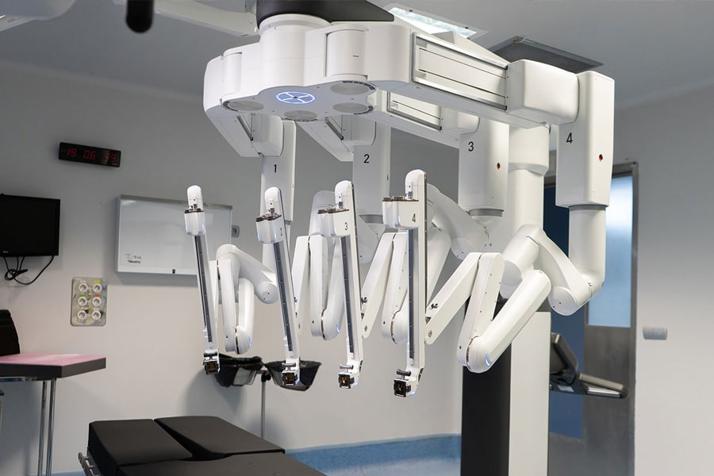

¿Cómo se rigen los sistemas autónomos?
Para garantizar la seguridad y la convivencia con los seres humanos, la robótica y la inteligencia artificial moderna adoptan principios éticos fundamentales basados en las famosas leyes de la ciencia ficción:
Un robot no debe dañar a un ser humano ni permitir que sufra daños por inacción.
Debe obedecer las órdenes humanas, siempre que no entren en conflicto con la primera ley.
Debe proteger su propia integridad si esto no contradice las leyes anteriores.
Evolución y Generaciones
- ▪ 1ª Gen: Manipuladores fijos para tareas repetitivas en líneas de ensamblaje.
- ▪ 2ª Gen: Robots dotados de sensores básicos para reaccionar ante estímulos del entorno.
- ▪ 3ª Gen: Sistemas guiados por visión artificial y control por microprocesadores.
- ▪ 4ª Gen: Robots inteligentes con IA avanzada y capacidad de aprendizaje autónomo.
Campos de Aplicación
"La robótica actual pasa de ser una simple herramienta de fuerza mecánica a convertirse en un nodo inteligente de conocimiento."
Galería de Prototipos Emblemáticos
Modelos reales que definen el estándar de la tecnología robótica actual:

Atlas (Boston Dynamics)
Humanoide diseñado para acrobacias, equilibrio extremo y navegación en terrenos complejos.

Sistema Da Vinci
Plataforma robótica que permite a los cirujanos realizar operaciones mínimamente invasivas con precisión milimétrica.

Rovers de Marte
Laboratorios móviles autónomos diseñados para analizar la geología y buscar rastros de vida en otros planetas.
El Horizonte: Cobots y Nanorobótica
La tendencia actual se centra en los cobots (robots colaborativos) diseñados para operar codo a codo con humanos de manera segura y sin barreras físicas. Paralelamente, la nanotecnología abre paso a microrrobots capaces de desplazarse por el torrente sanguíneo para abordar tratamientos médicos internos altamente precisos.